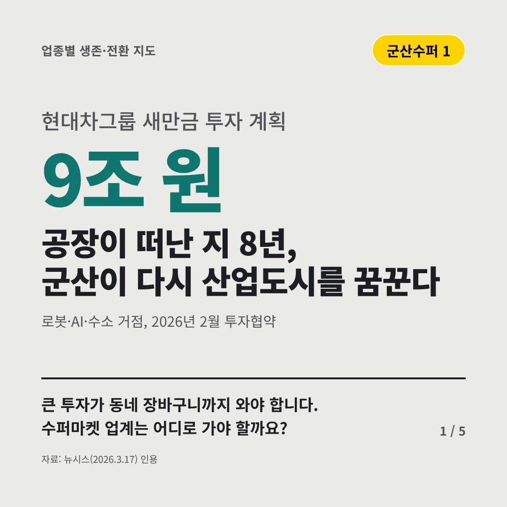
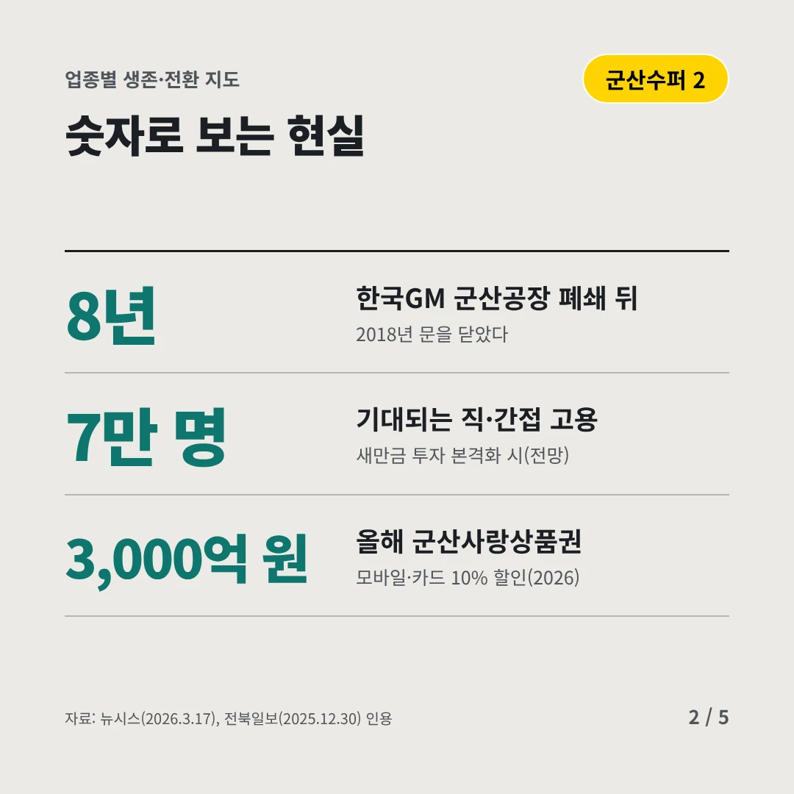
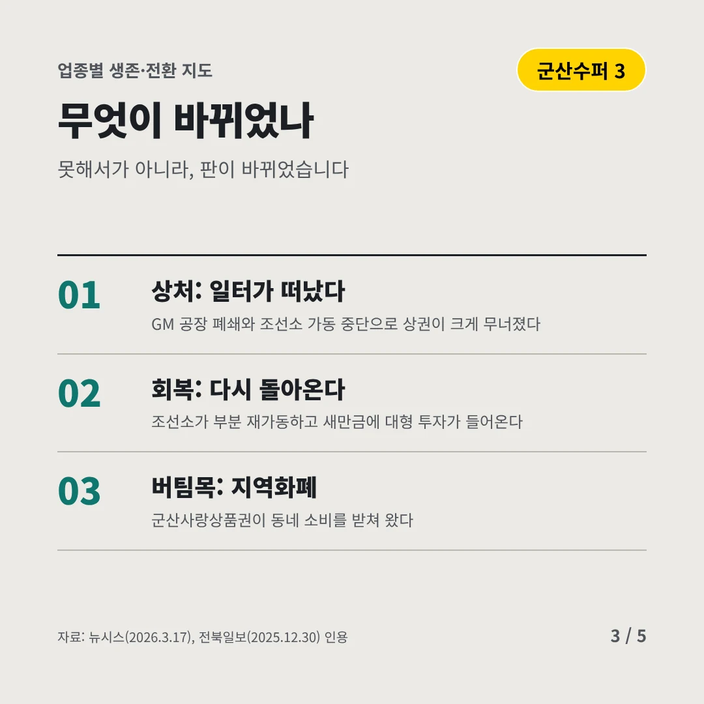
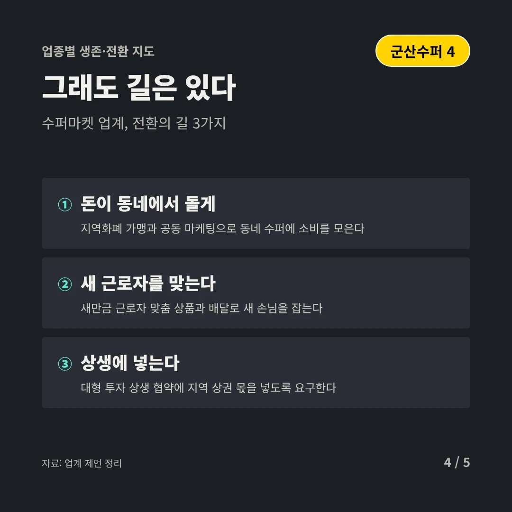
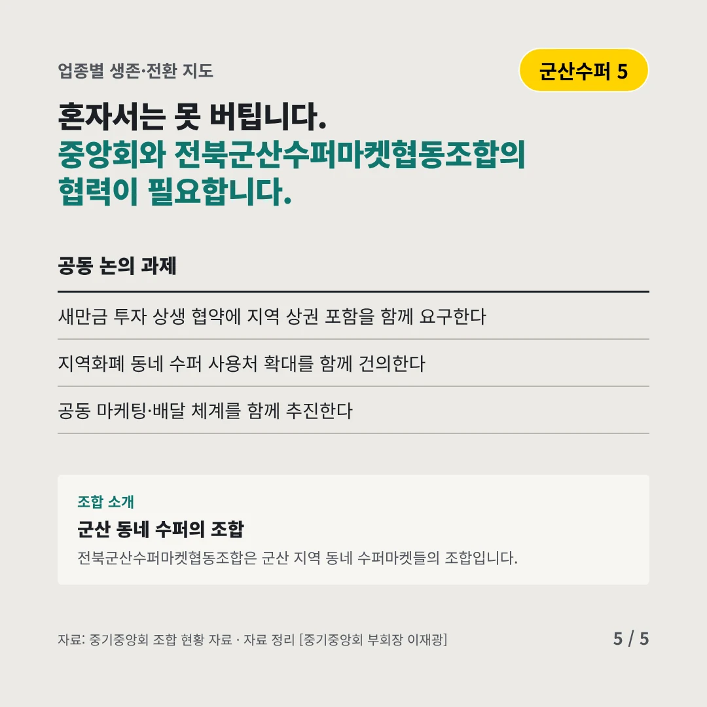
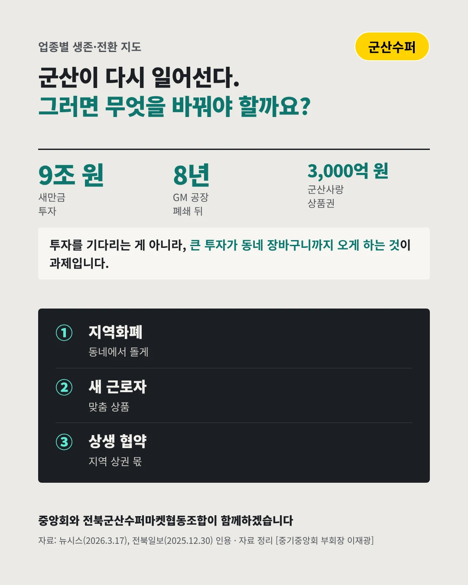

전북군산수퍼마켓협동조합
공장이 떠난 지 8년, 군산이 다시 산업도시를 꿈꾼다
9조 원 현대차그룹 새만금 투자 계획






큰 투자가 동네 장바구니까지 와야 합니다. 수퍼마켓 업계는 어디로 가야 할까요?
숫자로 보는 현실
- 8년한국GM 군산공장 폐쇄 뒤2018년 문을 닫았다
- 7만 명기대되는 직·간접 고용새만금 투자 본격화 시(전망)
- 3,000억 원올해 군산사랑상품권모바일·카드 10% 할인(2026)
무엇이 바뀌었나
- 상처: 일터가 떠났다GM 공장 폐쇄와 조선소 가동 중단으로 상권이 크게 무너졌다
- 회복: 다시 돌아온다조선소가 부분 재가동하고 새만금에 대형 투자가 들어온다
- 버팀목: 지역화폐군산사랑상품권이 동네 소비를 받쳐 왔다
그래도 길은 있다
- 돈이 동네에서 돌게지역화폐 가맹과 공동 마케팅으로 동네 수퍼에 소비를 모은다
- 새 근로자를 맞는다새만금 근로자 맞춤 상품과 배달로 새 손님을 잡는다
- 상생에 넣는다대형 투자 상생 협약에 지역 상권 몫을 넣도록 요구한다
한 장 요약

조합 소개
전북군산수퍼마켓협동조합은 군산 지역 동네 수퍼마켓들의 조합입니다.
자료: 뉴시스(2026.3.17), 전북일보(2025.12.30)